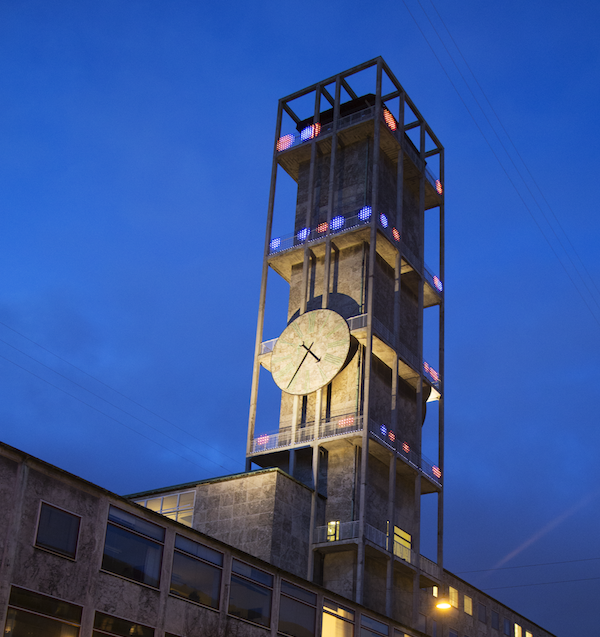
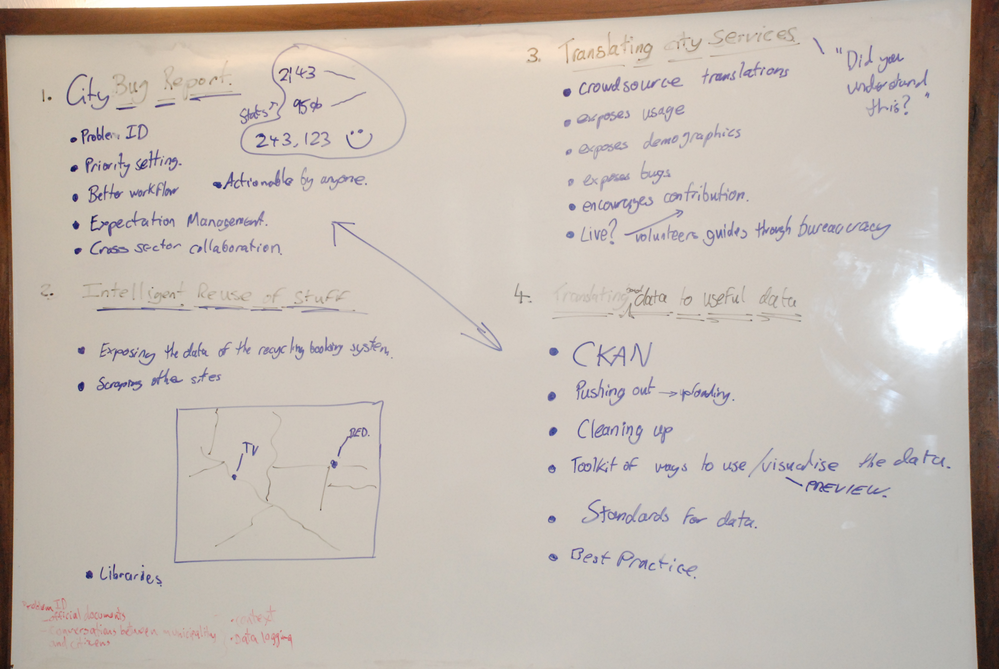

City Bug Report: Visualizing Civic Data


In 2012, I helped develop a media facade installation on the icon city hall tower in Aarhus. The installation was part of the Media Architecture Biennale 2012 hosted in Aarhus. The installation on the city hall tower consisted of 5500 LEDs. We used these to show an animated data visualization of incoming and outgoing communication via the municipal “Postliste” data. Whenever a citizen makes an inquiry to the municipality, they have to reply in a timely manner. With the visualization of the response rate for individual requests, the media facade shows how some citizen requests are handled timely (blue dots), whereas others are delayed beyond the set reply rate (red dots).
The project was part of a broader effort in my work at Smart Aarhus on open data and my research and work within Urban Interaction design. The installation was accompanied by a platform where citizens of Aarhus could report issues or what we called “Urban Bugs”.
Background
The concept was developed through a participatory design workshop involving students, researchers, stakeholders from the city, designers and participatns from Smart Aarhus.

The key goal was to develop a project that could connect our efforts in working with and making more civic data publicly available, and create visibility around Smart Aarhus and the Media Architecture Biennale.
Data visualization
The media facade visualize data from the public mailing list within the city. It cycles through a year of communication between citizens and municipal departments. The video below is a live capture from the installation.
The key idea is that blue dots represents incoming requests from citizens and red dots represents outgoing replies from the municipality. The larger the dot, the longer the timespan in the reply.
The data visualization is more artisitic than communicative, mainly because of the challenge involved in communicating the complexities of the data on a low resolution LED-dot display.
Project and publications
My main role in the project was to develop the design concept and help the different stakeholders align input and expectations. The project developed quite rapidly over a couple of months with a workshop, design meetings, collaborations within the city on data sources etc. One of our students at the time, Kristian, developed the animation (in Flash no less!) and volunteers helped install the LED rails on the tower. I contributed with data analysis, 3D mock-ups, back-end development (primarily with the sister-project). The project turned out to be one of the two projects that ended up forming my Master thesis.
There is more about the project in our MAB’2014 publication “City Bug Report: Urban Prototyping as Participatory Process and Practice” and my Master thesis “Digital Urban Development: Reconceptualising the Smart City as a Design Challenge from an Interaction Design Perspective”. You can also read a small piece on the project in our local news paper (in Danish).